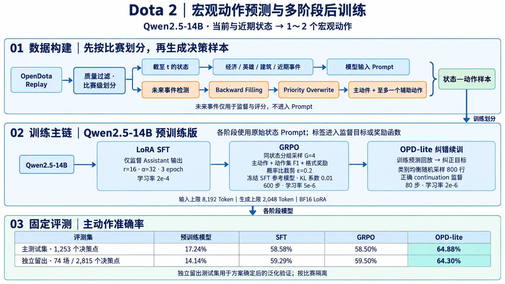

项目背景
Dota 2 的团队决策同时依赖英雄状态、经济经验、建筑、地图资源和近期战斗。本项目将 OpenDota Replay 整理为结构化状态，让 Qwen2.5-14B 根据当前及近期信息，离线预测队伍随后执行的 1～2 个宏观动作。
我独立完成数据构建、LoRA SFT、GRPO、OPD-lite 纠错续训和独立留出评测。监督目标由 Replay 中实际发生的事件回填生成，任务聚焦推进、防守、团战和资源运营等宏观行为。
问题与方法设计
| 问题 | 处理方法 |
|---|---|
| Replay 缺少宏观动作标签 | 检测真实事件 → Backward Filling → Priority Overwrite |
| 动作稀疏、重叠且类别不均衡 | 动作相关回填窗口、主次标签选择、类别均衡采样 |
| 时序数据存在泄漏风险 | 先按比赛划分，隔离未来标签与当前状态，审计字段和跨集合重叠 |
| SFT 难以直接优化组合动作 | 同状态分组采样，用主动作、动作集 F1 与格式计算奖励 |
| 训练后弱类别仍有错误 | 回放训练预测，构造纠错目标并低学习率续训 |
总体方法：五个模块

数据与训练主链
OpenDota Replay
→ 当前及近期状态构建
→ 未来事件检测 → Backward Filling → Priority Overwrite
→ 比赛级划分与 Prompt 泄漏审计
→ Qwen2.5-14B → LoRA SFT → GRPO 600 步
→ 类别均衡 random-800 → OPD-lite 80 步
→ 主测试集 + 74 场新比赛独立留出测试集| 模块 | 输入 | 输出 |
|---|---|---|
| 数据构建 | 比赛 JSON 与事件日志 | 状态 Prompt、主次动作与分析元数据 |
| SFT | Prompt + Assistant 目标 | SFT LoRA Adapter |
| GRPO | Prompt + 验证器侧 gt_actions | GRPO Adapter 与采样日志 |
| OPD-lite | 训练预测 + 正确 continuation | 最终 LoRA Adapter |
| 统一评测 | 各阶段生成结果 | 五项指标、分类报告与混淆分析 |
比赛级划分在决策样本生成前完成。未来事件仅进入标签构建，模型输入由时刻 t 及之前的状态组成。
模块一：状态与动作数据构建
步骤 1：抓取、过滤与比赛级划分
通过 /api/proMatches 获取职业比赛 ID，再调用 /api/matches/{match_id} 抓取并缓存解析 JSON，失败请求重试。检查 10 名玩家、关键时序字段和比赛结果，筛选约 1,200～3,300 秒、至少 4 次团战和 10 个目标事件的比赛。
主数据保留 168 场，按 match_id 划分后生成决策样本。
| 划分 | 比赛数 | 全部时间点 | 有效决策点 |
|---|---|---|---|
| 训练 | 121 | 6,660 | 4,696 |
| 验证 | 15 | 852 | 593 |
| 测试 | 32 | 1,798 | 1,253 |
训练数据按动作类别均衡采样为 7,200 行，包含低频类别重复采样，唯一 sample_id 约 3,521 个。
步骤 2：采样时间点与构建状态
从 300 秒开始，每 60 秒生成双方视角决策点，保留完整的 120 秒后续监督窗口。使用截至 t 的玩家经济、经验、装备、击杀与买活信息，聚合队伍状态，并统计最近 180 秒的事件和变化趋势。
模型输入包含己方与敌方快照、经济经验差、建筑状态、近期团战与击杀、Roshan 和视野记录。底层数值组织为比赛阶段、资源差、建筑压力与近期事件等结构化 JSON。
步骤 3：检测未来事件
| 事件 | 动作标签 |
|---|---|
| 敌方或己方建筑被摧毁 | 按归属、线路、塔 / 兵营 / 遗迹映射 Push 或 Defend |
| Roshan 击杀 | Roshan |
| 达到死亡阈值的团战 | Team Fight |
| 排除附近团战和目标事件后的孤立击杀 | Pickoff |
| 插眼、反眼与拾符日志 | Vision、Rune |
| 无有效事件覆盖 | Farm |
动作空间包含推进和防守各 5 类，以及 Team Fight、Pickoff、Roshan、Vision、Rune、Farm，共 16 类。最终主动作主要覆盖 12 个非终局类别。
步骤 4：Backward Filling 回填
事件 a 发生于 tₑ，以动作相关窗口 Lₐ 将标签加入满足 tₑ − Lₐ ≤ t ≤ tₑ 的采样点。
| 动作 | 窗口 |
|---|---|
| Ancient、Barracks、Roshan | 120 秒 |
| 三路塔推进 / 防守 | 90 秒 |
| Team Fight | 75 秒 |
| Pickoff、Vision | 35 秒 |
| Rune | 30 秒 |
| Farm | 无候选时回退 |
候选记录事件时间、来源、窗口、优先级和置信度。置信度按 max(0.1, base_confidence − 0.2 × distance / fill_window) 随事件距离衰减。
步骤 5：Priority Overwrite 选择主次动作
将同一时间点候选放入 bucket[t]，按优先级降序、置信度降序、事件距离升序排列。选择最高优先级核心动作作为主标签，最多保留一个不同辅助动作。
Defend Ancient 100 > Push Ancient 98
Defend Barracks 92 > Push Barracks 90
Roshan 84 > Team Fight 80
Defend Lane 72～74 > Push Lane 66～68
Pickoff 58 > Vision 32 > Rune 26 > Farm 8步骤 6：隔离 Prompt、标签与分析字段
User Prompt 保存状态、固定动作清单和输出要求；Assistant 目标保存 <think> 状态分析与 <answer> 主次动作。状态分析通过状态信息与规则标签模板构造。
gt_actions 交给奖励函数和评测器，事件证据保留为分析元数据。删除 decision_hints、label_evidence、候选标签和未来摘要等输入线索，再检查跨集合 sample_id、match_id、Prompt hash 重叠；记录中的重叠数与禁用内容命中数均为 0。
模块二：Assistant 监督 LoRA SFT
步骤 1：构造对话与监督掩码
从 JSONL 读取原始 Prompt 和标准 Assistant continuation，通过 Tokenizer 的 Chat Template 拼接。Labels 中 User 和 padding 位置设为忽略值，Assistant 输出位置保留目标 Token ID，仅在回答位置计算交叉熵。
步骤 2：加载模型并注入 LoRA
以 BF16 加载 Qwen2.5-14B 预训练版，启用梯度检查点。LoRA 覆盖 q/k/v/o 注意力投影及 gate/up/down MLP 投影，冻结基础参数并更新 Adapter。
| 配置 | 数值 |
|---|---|
| LoRA | rank=16、alpha=32、dropout=0.05 |
| 设备 | 单机 8 × A800 80GB |
| 学习率 / 轮数 | 2e-4 / 3 epoch |
| 每卡 batch / 梯度累积 | 1 / 4，有效 batch=32 |
| 长度 | Prompt 8,192 + 回答 2,048，总上限 10,240 Token |
| warmup ratio | 0.03 |
步骤 3：训练与保存
使用 PyTorch、Transformers、PEFT、TRL SFTTrainer 和 torchrun 训练，保存 Adapter、Tokenizer 及训练检查点。SFT 主测试集主动作准确率为 58.58%，较未加载 Adapter 的预训练模型提高 41.34 个百分点。
模块三：GRPO 策略优化
步骤 1：从 SFT 初始化并分组采样
当前策略加载 SFT Adapter，冻结 SFT 模型作为参考分布。每个 Prompt 采样 G=4 条回答，温度 0.9、top_p=0.95，最大新生成 2,048 Token，并记录采样旧策略的响应 Token logprob。
步骤 2：解析动作并计算奖励
优先解析最后一个 answer 标签，规范化动作名、去重，并标记未知动作、缺失格式和动作过多等异常。隐藏 gt_actions 仅供评分。
R = 1.0 × 主动作正确
+ 0.6 × 动作集 F1
+ 0.2 × 格式合法 − 0.3 × 格式非法
− 0.2 × 动作过多 − 0.2 × 存在未知动作步骤 3：标准化组内优势
计算四条奖励的均值和总体标准差。标准差小于 1e-6 时优势置零；其余情况将“奖励减均值、除标准差”的结果裁剪到 [−3,3]。
步骤 4：计算概率比裁剪与参考 KL
Trainer 对采样序列重新前向，在响应位置计算当前策略与采样旧策略的概率比 r。使用 min(rA, clip(r, 0.8, 1.2)A) 构造裁剪目标，再加入冻结 SFT 参考分布的 KL 正则。
响应 Mask 选择损失位置，反向传播更新 LoRA。AdamW 学习率 5e-6，batch size=1，梯度累积 4，梯度范数上限 1.0，共训练 600 步。
步骤 5：保存轨迹并分析收益
采样日志记录 sample_id、比赛与时间、目标动作、组内奖励、均值、标准差和最佳回答。主测试集动作集完全匹配率由 SFT 的 39.74% 提升至 44.69%，主动作准确率为 58.50%。
模块四：OPD-lite 纠错续训
步骤 1：回放训练预测并标记错误
用 SFT+GRPO 600 步模型回放 7,200 行训练数据，比较主动作、动作集合、格式以及 Team Fight 假阳性和假阴性，共识别 3,114 行困难错误。
步骤 2：构造正确 continuation
保留原始 Prompt，优先复用样本已有的标准 Assistant 目标；缺失时根据 gt_actions 构造纠正模板，写入 opd_target_text。预测、错误类型和 hindsight 信息用于离线分析与选样，训练读取原始 Prompt 和正确 continuation。
步骤 3：类别均衡采样与低学习率续训
比较困难错误采样与类别均衡随机采样。最终从已分析训练行中按主动作类别均衡选取 800 行，同时包含正确和错误样本，以 GRPO Adapter 初始化，使用监督交叉熵续训。
| 配置 | 最终方案 |
|---|---|
| 样本 | class-balanced random-800 |
| 学习率 / 更新步数 | 2e-6 / 80 步 |
| 训练方式 | BF16 LoRA、8 卡 torchrun |
| 交付产物 | SFT → GRPO → OPD-lite 最终 Adapter |
步骤 4：保留 token-level OPD 对照
另一条实验让冻结教师读取 Prompt、学生回答和正确动作构造的 hindsight hint，在相同响应 Token 上计算师生 logprob，用 token 优势与 sign-aware PPO surrogate 更新学生。该分支从 GRPO 起点得到主测试集 56.58%；在最佳 OPD-lite 后继续训练，独立留出集准确率为 63.34%。最终交付采用 random-800/80 的 OPD-lite。
模块五：统一评测与独立留出验证
步骤 1：固定解码和解析
所有阶段采用 greedy decoding，Prompt 上限 8,192 Token、生成上限 2,048 Token。测试数据可分片并行生成，最后合并结果。解析器优先读取最后一个 answer 标签，缺失时从完整响应中尝试解析标准动作。
动作正确性与格式合法性分别统计，能够解析出正确动作时计为动作正确。主动作取第一个动作，动作集合先规范化并去重。
步骤 2：计算五项指标
报告主动作准确率、主动作 Macro-F1、动作集完全匹配率、动作 Micro-F1 和动作 Macro-F1。Macro-F1 对真值中有样本支持的类别计算后取平均。
主测试集：32 场、1,253 个有效决策点
| 阶段 | 主动作准确率 | 主动作 Macro-F1 | 集合完全匹配 | 动作 Micro-F1 | 动作 Macro-F1 |
|---|---|---|---|---|---|
| Qwen2.5-14B | 17.24% | 18.49% | 7.10% | 37.15% | 26.18% |
| SFT | 58.58% | 62.65% | 39.74% | 67.43% | 61.16% |
| SFT + GRPO | 58.50% | 63.10% | 44.69% | 70.26% | 62.71% |
| + OPD-lite | 64.88% | 67.74% | 48.84% | 72.82% | 67.26% |
步骤 3：独立新比赛验证
另抓取 80 场新比赛，74 场通过质量过滤，形成 4,592 个时间点、2,815 个有效决策点。与主数据的 match_id 和 sample_id 重叠均为 0。该集合用于方案确定后的独立留出测试。
| 阶段 | 主动作准确率 | 主动作 Macro-F1 | 集合完全匹配 | 动作 Micro-F1 | 动作 Macro-F1 |
|---|---|---|---|---|---|
| Qwen2.5-14B | 14.14% | 14.69% | 5.72% | 34.58% | 22.01% |
| SFT | 59.29% | 62.04% | 44.62% | 70.35% | 60.03% |
| SFT + GRPO | 59.50% | 62.78% | 49.24% | 72.92% | 61.00% |
| + OPD-lite | 64.30% | 66.12% | 51.94% | 74.59% | 64.33% |
OPD-lite 相对 GRPO 在主测试集提高主动作准确率 6.38 个百分点，在独立留出集提高 4.80 个百分点；留出集主动作 Macro-F1 和集合完全匹配率分别提高 3.34、2.70 个百分点。
分类回归与局限
独立留出集上，OPD-lite 后 Team Fight 召回率从 23.67% 升至 35.78%，Farm 从 35.89% 升至 52.42%；Pickoff 从 66.44% 降至 50.00%，部分防守动作也出现回退。结果分析同时检查总体指标与各动作表现。
- 标签噪声：回填窗口和优先级影响监督目标，己方建筑被摧毁映射的 Defend 表示防守目标窗口，Farm 是无候选回退。
- 输入条件：Replay 双方统计与玩家实际战争迷雾下的信息范围存在差异，实时应用需要重新约束状态来源。
- 时间相关性：同局多个决策点相关，后续可按比赛重采样估计置信区间，增加多随机种子实验。
- 后续验证：按预测提前量、类别和比赛版本分组，结合专家复核分析规则标签与宏观决策的匹配程度。